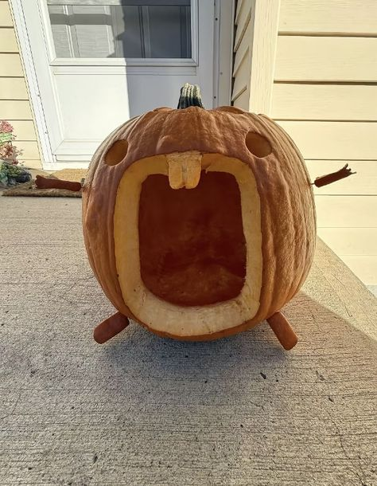
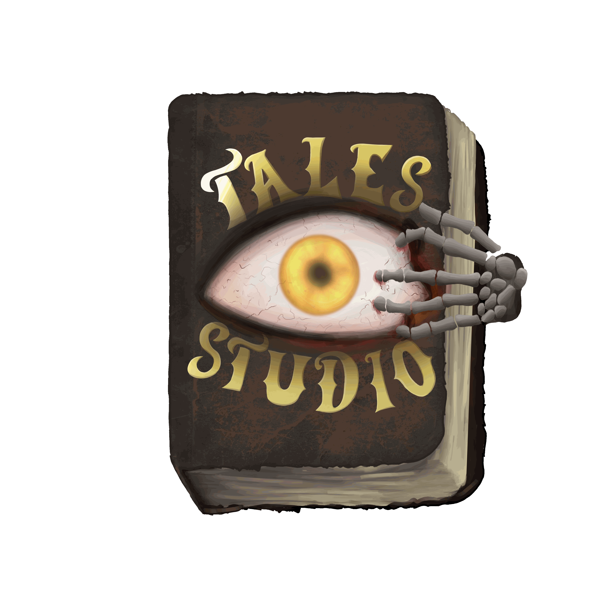

Aroa Quiroga Martínez
Líder de proyecto, artista principal y diseñador narrativo
Dirige el proyecto y al equipo, redacta el GDD, diseña el trasfondo narrativo y desarrolla el apartado visual principal.
La noche más estresante del año, un conserje agotado y una residencia universitaria donde ya no sabes qué es real. ¿Podrás completar tu turno antes del amanecer?
Jugar la demoSe juega directamente en el navegador, sin descargas.


Líder de proyecto, artista principal y diseñador narrativo
Dirige el proyecto y al equipo, redacta el GDD, diseña el trasfondo narrativo y desarrolla el apartado visual principal.
Programador principal y codiseñador narrativo
Define la arquitectura técnica y los límites de programación, valida la viabilidad de las mecánicas y perfecciona el guion y los diálogos.
Diseñador de juego y programador de lógica
Idea las mecánicas, diseña el gameplay loop y apoya en la programación de los sistemas principales.
Programadora de sistemas de jugabilidad y web
Implementa la lógica interna (estados de los NPCs, tareas y brotes) y exporta y optimiza el juego para navegadores web.
Compositora de audio y artista de objetos de escenario
Crea la banda sonora y los efectos de sonido que generan tensión psicológica, e ilustra los assets 2D y objetos del escenario.
Asesora artística y artista conceptual
Da soporte al área visual, define la coherencia cromática y colabora en los concept arts e ilustraciones de apoyo.
Crear una experiencia de terror psicológico que mantenga la inmersión, el ritmo y la accesibilidad en el navegador, con controles sencillos, interfaz minimalista y una tensión basada en la atmósfera.
Ofrecer juegos independientes sin microtransacciones ni publicidad invasiva que interrumpa la experiencia, con una demo web gratuita fácil de transmitir por streamers y accesible desde cualquier navegador.
Shift Happens nació de una lluvia de ideas en grupo en TALES STUDIO, un equipo multidisciplinar de 6 miembros. Filtramos dinámicas en conjunto y decidimos de forma colaborativa el estilo artístico, la línea musical, las mecánicas y los comportamientos, hasta validar la propuesta base: combinar la gestión de tareas de un conserje de residencia universitaria con el terror de supervivencia en 2D. Desde entonces trabajamos con tres reglas: interfaz minimalista, mecánicas directas y accesibles y terror basado en la atmósfera.

Shift Happens combina la gestión de tareas de un conserje de residencia universitaria con el terror de supervivencia en 2D. En la noche más estresante del año, el agotamiento y la esquizofrenia del protagonista hacen que el límite entre los recados cotidianos y las alucinaciones mortales desaparezca. ¿Podrás mantener la cordura y completar tu turno antes del amanecer?
Tu turno empieza cuando pulses «Run game». Mejor con teclado y en pantalla completa.
¿No carga o prefieres verla aparte? Abrir la demo en itch.io
Imprimir documentos, arreglar o limpiar el baño, cambiar una bombilla fundida o limpiar un derrame en la cocina. Los NPCs generan las tareas y algunas saltan al azar, así que cada partida es distinta.
Tras un apagón, el estrés desencadena un brote esquizofrénico: la residencia se vuelve hostil, los estudiantes adquieren un aspecto monstruoso y ya no sabes qué es real.
Sin menús recargados: la lista de tareas está en tu teléfono y tu estado se refleja en un indicador sutil de pulso cardíaco en una esquina de la pantalla.
Con Shift alternas entre caminar y moverte en sigilo. Las entidades ciegas detectan tu sonido y, si algo te ve, tendrás que esconderte en las taquillas.
La tensión nace de la acumulación de tareas, la gestión de la luz y la ansiedad y el sonido. Sin menús de inventario lentos ni sistemas de crafting complejos.
Controles sencillos y una demo web gratuita que se juega directamente en el navegador.
Así hemos pasado de una idea a una noche que da miedo completar.
Semanas 1 a 4
Semanas 5 a 8
Próximamente
Semanas 9 a 11
Próximamente
| Juego | Qué hace bien | Cómo nos diferenciamos |
|---|---|---|
| Five Nights at Freddy's | Mecánicas rutinarias de trabajo que se tuercen hacia el terror, con ambientación opresiva en el turno de noche. | Aquí recorres toda la residencia completando tareas y la amenaza nace de las alucinaciones del propio conserje. |
| The Mortuary Assistant | Trabajo nocturno rutinario que se convierte en terror, con éxito basado en el pago único y los creadores de contenido. | Sumamos un sistema de tareas con NPCs autónomos y un brote que cambia su comportamiento. |
| Don't Starve | Mecánicas de cordura y estrés con un apartado gráfico 2D dibujado a mano. | Menos sistemas complejos: sin inventarios lentos ni crafting, controles simples y partida directa desde el navegador. |
Imagen promocional y página web de presentación del juego para dar a conocer el proyecto antes de la entrega final.
Publicación de la demo web gratuita (Noche 1) en Itch.io, jugable desde el navegador y pensada para que streamers y creadores de contenido puedan transmitirla fácilmente.
Campaña de marketing para convertir a los jugadores de la demo en compradores de la versión comercial completa, de pago único (3,99 €) y sin microtransacciones.
Próximamente
Próximamente
Próximamente
Próximamente
Próximamente
Próximamente
¿Has sobrevivido a la noche? Cuéntanoslo. Escríbenos para dar tu opinión, proponer una colaboración o contactar con la prensa.
Correo: tales.studio.26@gmail.com